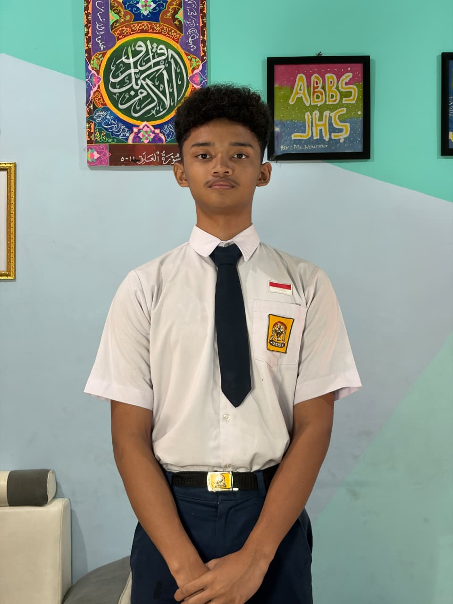
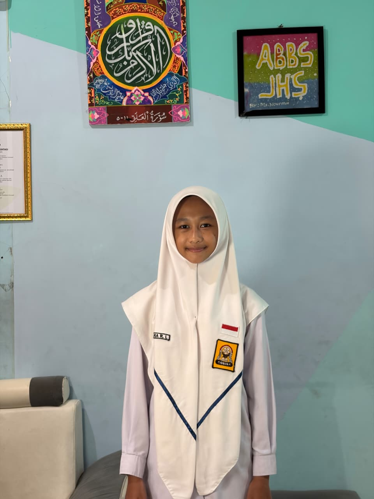
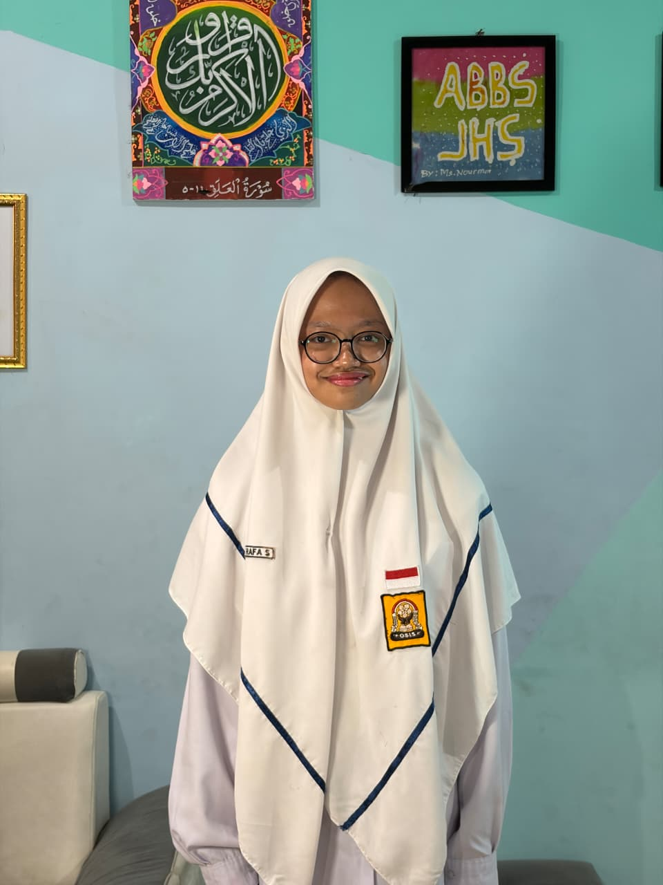

Mockup internal · bukan halaman pemilihan
Pilih arah tampilan pemilihan.
Tiga pendekatan yang lebih ringkas dari desain sekarang. Semua memakai data dan foto kandidat asli, bisa dicoba di desktop maupun HP, dan tidak mengirim suara.

A · GalleryGaleri satu layar
Lima foto besar dalam satu baris. Klik foto untuk memilih, buka dialog untuk visi & misi. Paling visual.
Buka mockup →
B · Split pickerDaftar + panel detail
Daftar kandidat ringkas di kiri, visi & misi lengkap di panel kanan. Paling informatif, tanpa modal.
Buka mockup →
C · Light ballotKartu terang + panel
Nuansa terang dan bersih. Kartu kandidat ringkas di atas, panel visi & misi di bawah. Paling minimal.
Buka mockup →Catatan: tombol “Kirim suara” hanya menampilkan pesan demo. Untuk kembali ke aplikasi pemilihan, buka halaman utama.